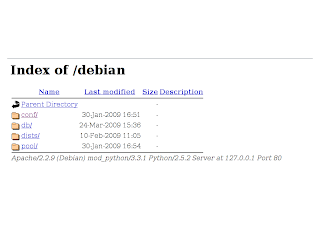

Creación de un repositorio personal de Debian
Posted on sáb 04 abril 2009 in Linux • 2 min read
Luego de una semana donde termine lesionado del codo y hombro izquierdo, voy a explicar como crear un repositorio personal de paquetes para Debian.
Está publicación se basa en el tutorial de Debian Administration y en el tutorial del Blog de Mario Debian .
En Debian existe un programa que permite crear un repositorio personal reprepro:
aptitude install reprepro
Es necesario instalar un servidor web como:
- apache2
- lighttpd
- cherokee
La estructura que utiliza reprepro es la siguiente:
|-- conf
|-- dists
`-- pool
En el directorio dist se tiene un directorio por cada versión de la distribución (etc, lenny, squeeze, sid, etc). En el directorio pool se encuentran los paquetes clasificados por sección (main, contrib, non-free) y en directorios por orden alfabético.
Es necesario crear el directorio conf dentro del directorio raíz del servidor web. Y en el se creará el archivo distributions con la siguiente configuración:
Origin: Paquetes Ernesto
Label: Paquetes Ernesto
Suite: unstable
Codename: sid
Architectures: i386 source
Components: main
Description: Paquetes elaborados por Ernesto Crespo
Origin: Paquetes Ernesto
Label: Paquetes Ernesto
Suite: testing
Codename: lenny
Architectures: i386 source
Components: main
Description: Paquetes elaborados por Ernesto Crespo
Origin: Paquetes Ernesto
Label: Paquetes Ernesto
Suite: stable
Codename: etch
Architectures: i386 source
Components: main
Description: Paquetes elaborados por Ernesto Crespo
En este ejemplo se va a manejar los repositorios para lenny, etch y sid con los binarios para i386 y las fuentes en la sección main del repositorio.
Para empezar a usar reprepro:
- Para subir el paquete binario al repositorio se ejecuta:
reprepro -b . -V -C main includedeb sid accesibilidad_1.0_all.deb
- Para subir las fuentes de un paquete se ejecuta:
reprepro -b . -V -C main includedsc sid sshguard_1.4rc3-1.dsc
- Y su binario:
reprepro -b . -V -C main includedeb sid sshguard_1.4rc3-1_i386.deb
- Para eliminar un paquete del repositorio se ejecuta:
reprepro -b . -V -C main remove sid sshguard_1.4rc3-1_i386.deb
- Para utilizar el repositorio se agregará el url siguiente en /etc/apt/sources.list:
deb http://midominio/repo/ sid main
La estructura de directorios del repositorio queda de la siguiente forma:

===
¡Haz tu donativo! Si te gustó el artículo puedes realizar un donativo con Bitcoin (BTC) usando la billetera digital de tu preferencia a la siguiente dirección: 17MtNybhdkA9GV3UNS6BTwPcuhjXoPrSzV
O Escaneando el código QR desde billetera: